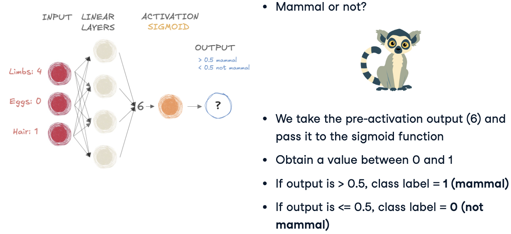

import torchDeep Learning
PyTorch
Python
PyTorch
El Deep Learning está en todas partes, desde las cámaras de los smartphones hasta los asistentes de vos o los vehículos autónomos. En este curso, descubriras esta potente tecnología y aprenderás a aprovecharla con PyTorch, una de las bibliotecas de aprendizaje profundo más populares. Al finalizar tu recorrido por este documento, serás capaz de aprovechar PyTorch para resolver problemas de clasificación y regresión utilizando el aprendizaje profundo.
Introducción a PyTorch (biblioteca de Deep Learning)
Antes de comenzar a crear modelos complejos, te haré conocer PyTorch, un librería de aprendizaje profundo. Aprenderás a manipular tensores, crear estructuras de datos de PyTorch y construir tu primera red neuronal en PyTorch con capas lineales.
El Deep Learning impulsa muchas innovaciones recientes y emocionantes, tales como la traducción de idiomas, coches autónomos, diagnósticos médicos y chatbots.

Qué es Deep Learning?

Deep Learning (aprendizaje profundo) es un subconjunto del aprendizaje automático (machine learning). La estructura del modelo es una red de entradas (input), capas ocultas (hidden layers) y salidas (output), como se muestra en la siguiente imagen:

Como apreciamos en la figura, una red puede tener una o muchas capas ocultas

La intuición original detrás del aprendizaje profundo era crear modelos inspirados en el cerebro humano, sobre todo por cómo aprende el cerebro humano: a través de células interconectadas llamadas neuronas. Es por esto que llamamos a los modelos de aprendizaje profundo Redes Neuronales.

Estas estructuras de modelos en capas requieren muchos más datos en comparación con otros modelos de aprendizaje automático para derivar patrones. Generalmente hablamos de al menos cientos de miles de puntos de datos.
PyTorch: un framework del deep learning
Si bien existen varios framework y paquetes para implementar el aprendizaje profundo en cuanto a algoritmos, nos centraremos en PyTorch, uno de los frameworks más populares y mejor mantenidos. PyTorch fue desarrollado originalmente por Meta IA como parte del laboratorio de investigación de inteligencia artificial de Facebook antes de que pasara a depender de la fundación Linux.
Está diseñado para ser intuitivo y fácil de usar, compartiendo muchas similitudes con la biblioteca de Python NumPy.
PyTorch Tensors
Podemos importar el módulo PyTorch llamando a
La estructura de datos fundamental en PyTorch es un tensor, que es similar a una matriz.
Puede soportar muchas operaciones matemáticas y constituye un componente básico para nuestras redes neuronales.
Se pueden crear tensores a partir de listas de Python o matrices NumPy utilizando la clase
torch.tensor()esta clase convierte los datos a un formato compatible para el aprendizaje profundo.
mi_lista = [[1,2,3], [4,5,6]]
tensor = torch.tensor(mi_lista)
print(tensor)tensor([[1, 2, 3],
[4, 5, 6]])Atributos de los Tensores
Podemos llamar a tensor.shape para mostrar la forma de nuestro objeto recién creado.
print(tensor.shape)torch.Size([2, 3])Y tensor.dtype() para mostrar su tipo de datos, aquí un entero de 64 bits.
print(tensor.dtype)torch.int64Verificar la forma y el tipo de datos garantiza que los tensores se alineen correctamente con nuestro modelo y tarea, y puede ayudarnos en caso de depuración.
Operaciones con Tensores
Se pueden sumar o restar tensores de PyTorch, siempre que sus formas sean compatibles.
a = torch.tensor([[1,1], [2,2]])
b = torch.tensor([[2,2],[3,3]])
c = torch.tensor([[2,2,2], [3,3,5]])print(a + b)tensor([[3, 3],
[5, 5]])Cuando las dimensiones no son compatibles, obtendremos un error.
También podemos realizar la multiplicación por elemento, lo que implica multiplicar cada elemento correspondiente.
print(a*b)tensor([[2, 2],
[6, 6]])También esta incluida la multiplicación de matrices, que no es más que uno forma de combinar dos matrices para crear una nueva.
print(a @ b)tensor([[ 5, 5],
[10, 10]])Detras de escena, los modelos de aprendizaje profundo realizan innumerables operaciones como la suma y multiplicación para procesar datos y aprender patrones.
Redes Neuronales y Capas
Vamos a contruir nuestra primer red neuronal usando tensores de PyTorch.
Una red neuronal consta de capas de entrada, ocultas y de salida.
La capa de entrada contiene las características del conjunto de datos,

La capa de salida contiene las predicciones,
Y hay capas ocultas (hidden layers) en el medio

Si bien una red puede tener cualquier cantidad de capas ocultas, comenzaremos construyendo una red sin capas ocultas donde la capa de salida es una capa lineal.

Aquí, cada neurona de entrada se conecta a cada neurona de salida, lo que se denomina una red “totalmente conectada”.
Esta red es equivalente a un modelo lineal y nos ayuda a comprender los fundamentos antes de agregar complejidad.
Usaremos el módulo torch.nn para construir nuestras redes. Esto hace que el código de la red sea más conciso y flexible y se importa convencionalmente como nn.
import torch.nn as nnAl diseñar una red neuronal, las dimensiones de las capas de entrada y salida están predefinidas.
La cantidad de neuronas en la capa de entrada es la cantidad de características en nuestro conjunto de datos.
Y el número de neuronas en la capa de salida es el número de clases que queremos predecir.
Digamos que creamos un input_tensor con forma de \(1\times 3\).
import torch
import torch.nn as nn
input_tensor = torch.tensor(
[[0.3471, 0.4547, -0.2356]]
)Podemos pensar en esto como una fila con tres “carectísticas” o “neuronas” .
A continuación, pasamos este input_tensor a una capa lineal, que aplica una función lineal para realizar predicciones.
Para ello usaremos nn.Linear() toma dos argumentos: int_features es el número de características en nuestra entrada ( en este caso, tres) y out_features es el tamaño del tensor de salida (en este caso, dos).

linear_layer = nn.Linear(
in_features = 3,
out_features = 2
)Especificar correctamente in_features garantiza que nuestra capa lineal pueda recibir el input_tensor.
Por último, pasamos input_tensor a linear_layer para generar una salida.
output = linear_layer(input_tensor)
print(output)tensor([[0.4595, 0.1513]], grad_fn=<AddmmBackward0>)Tenga en cuenta que esta salida tiene dos características o neuronas debido a las out_features especificadas en nuestra capa lineal.
Cuando input_tensor se pasa a linear_layer, se realiza una operación lineal para incluir pesos y sesgos.
Pesos (weights) y Sesgos (biases)
Cada capa lineal tiene un conjunto de pesos y sesgos asociados. Estas son las cantidades clave que definen una neurona.
print(linear_layer.weight)Parameter containing:
tensor([[ 0.5239, 0.1483, 0.5702],
[-0.1302, 0.1663, 0.4756]], requires_grad=True)print(linear_layer.bias)Parameter containing:
tensor([0.3446, 0.2329], requires_grad=True)Los pesos reflejan la importancia de diferentes características.
El sesgos es un término adicional que es independiente de los pesos, y proporciona a las neurona una salida de referencia.
Al principio, la capa lineal asigna pesos y sesgos aleatorios; estos se ajustan posteriormente.
Imaginemos nuestra red totalmente conectada en acción.
Digamos que tenemos un conjunto de datos meteorológicos con tres características: temperatura (temperature), humedad (humidity) y viento (wind). Y queremos predecir si lloverá (rain) o estará nublado (cloudy).
La característica humeda tendrá un peso más significativo en comparación a las demás características, ya que es un fuerte predictor de lluvia y nubes.
Los datos meteorológicos corresponden a una región tropical con alta probabilidad de lluvia, por lo que agrega un sesgo para tener en cuenta esta información de referencia.
Con esta información, nuestro modelo hace una predicción.
Capaz y Parámetros Ocultos
Hasta ahora, hemos utilizado una capa de entrada y una capa de lineal. Ahora, agregaremos más capas para ayudar a la red a aprender patrones complejos.
Apilamiento de capaz con nn.Sequential()
Apilaremos tres capas lineales usando nn.Sequential(), un contenedor de PyTorch para apilar capas en secuencia. Esta red toma la entrada, la pasa a cada capa lineal en secuencia y devuelve la salida.
model = nn.Sequential(
nn.Linear(n_features, 8),
nn.Linear(8, 4),
nn.Linear(4, n_classes)
)En este caso, las capas dentro de
nn.Sequential()son capas ocultas.n_featuresrepresenta el número de características de entrada yn_classesrepresenta el número de clases de salida, ambas definidas por el conjunto de datos.
Adición de capas
Podemos añadir tantas capas ocultas como queramos.

La dimensión de cada capa coincide con la dimensión de salida de la anterior.
model = nn.Sequential(
nn.Linear(10, 18),
nn.Linear(18, 20),
nn.Linear(20, 5)
)En nuestro ejemplo de tres capas, la primera capa toma 10 características y genera 18. La segunda toda 18 y genera 20. Finalmente, la tercera toma 20 y genera 5.
Las capas están hechas de neuronas
Una capa está completamente conectada cuando cada neurona se vincula a todas las neuronas de la capa anterior, como se muestra en rojo en la figura.
Cada neurona es una capa lineal:
realiza una operación lineal utilizando todas las neuonras de la capa anterior.
Por tanto, una sola neurona tiene \(N+1\) parámetros que se puede aprender, siendo la dimensión de salida la capa anterior, más 1 para el sesgo.
Parámetros y Capacidad del Modelo
Aumetar el número de capas ocultas aumenta el número total de parámetros en el modelo, también conocido como capacidad del modelo. Los modelos de mayor capacidad pueden manejar conjuntos de datos más complejos, pero su entrenamiento puede llevar más tiempo.
Una forma eficaz de evaluar la capacidad de un modelo es calcular su número total de parámetros.
Vamos a desglosarlo con una red de dos capas,
model = nn.Sequential(
nn.Linear(8, 4),
nn.Linear(4, 2)
)La primera capa tiene 4 neuronas, cada neurona tiene 8 pesos y un sesgo, lo que da como resultado 36 parámetros.
La segunda capa tiene 2 neuronas, cada neurona tiene 4 pesos y un sesgo, para un total de 10 parámetros.
Sumándolos todos, este modelo tiene 46 parámetros que se pueden aprender en total
También podemos calcular esto en PyTorch usando el método .numel(). Este método devuelve el número de elementos de un tensor.
total = 0
for parameter in model.parameters():
total += parameter.numel()
print(total)46Balance entre complejidad y eficiencia

Comprender el recuento de parámetros nos ayuda a equilibrar la complejidad y la eficiencia del modelo. Demasiados parámetros pueden dar lugar a tiempos de entrenamiento largos o sobreajuste, mientras que muy pocos pueden limitar la capacidad de aprendizaje.
Hiperparámetros y arquitectura de redes neuronales
Para entrenar una red neuronal en PyTorch, primero tendremos que entender componentes adicionales, como las funciones de activación y pérdida. Entonces nos daremos cuenta de que entrenar una red requiere reducir mínimo esa función de pérdida, lo que se hace calculando gradientes. Aprenderemos a utilizar estos gradientes para actualizar los parámetros de tu modelo.
Funciones de Activación
Hasta ahora hemos visto redes neuronales formadas únicamente por capas lineales.
Podemos agregar no linealidad a nuestros modelos usando funciones de activación. Discutiremos dos funciones de activación:
Sigmoid para clasificación binaria y,
Softmax para clasificación multiclase.
Esta no linealidad permite que las redes aprendan cosas más complejas, interacciones entre entradas y objetivos que son relaciones no linealeales.
Llamaremos a la salida de la última capa lineal la “pre-activación”. Salida, que pasaremos a funciones de activación para obtener la salida transformada.
Función Sigmoid
La función de activación sigmoidea se utiliza ampliamente para problemas de clasificación binaria. Digamos que estamos tratando de clasificar un animal como mamífero o no?. Tenemos tres datos: el número de extremidades, si pone huevos y si tiene pelo. Las dos últimas son variables binarias: 1 si es si, 0 si no.

Pasar la entrada a un modelo con dos capas lineales devuelve una única salida: el número 6, tal como apreciamos en la siguiente figura:

Este número aún no es interpretable. Tenemos que pasar el número 6 por la función sigmoide, transformandolo en un rango que represente la probabilidad entre cero y uno.

Si el resultado está más cerca de uno (mayor que 0.5), lo etiquetamos como clase uno (mamífero). Si fuese menor que 0.5 la predección sería cero (no un mamifero).

Ahora, implementemos sigmoide en PyTorch.
import torch
import torch.nn as nn
input_tensor = torch.tensor([[6]])
sigmoid = nn.Sigmoid()
output = sigmoid(input_tensor)
print(output)tensor([[0.9975]])Normalmente, nn.Sigmoid() se agrega como el último paso en nn.Sequential(), transformando automáticamente la salida de la capa lineal final.
model = nn.Sequential(
nn.Linear(6, 4), # Primera capa lineal
nn.Linear(4, 1), # Segunda capa lineal
nn.Sigmoid() # Función de activación
)Curiosamente, una red neuronal con solo capas lineales y una activación sigmoidea se comporta como una Regresión Logística. Más adelante agregaremos más capas y activaciones para comprender realmente el verdadero potencial del Deep Learning.
Función Softmax
Usamos softmax, otra función de activación popular, para clasificación multiclase que implica más de dos etiquetas de clase.
Digamos que tenemos tres clases:
Pajaro o Bird (0)
Mamífero o Mammal (1)
Reptil o Reptile (2)
En esta red, Softmax toma una dimensión tridimensional, salida de preactivación y genera una salida de la misma forma, una por tres.
La salida es una distribución de probabilidad:
Por cada elemento está entre cero y uno, y
los valores suman uno.

Aquí, la predicción es para la segunda clase, mamíferos, que tiene la probabilidad más alta 0.842.
En PyTorch, usamos nn.Softmax()
import torch
import torch.nn as nn
input_tensor = torch.tensor(
[[4.3, 6.1, 2.3]]
)
probabilities = nn.Softmax(dim=-1)
# dim = -1 indica que softmax se aplica a la última dimensión de input_tensor
output_tensor = probabilities(input_tensor)
print(output_tensor)tensor([[0.1392, 0.8420, 0.0188]])Similar a sigmoide, softmax puede ser la última capa en nn.Sequential.
Paso hacia adelante
Hemos explorado tensores, redes pequeñas y funciones de activación. Ahora profundicemos en la generación de predicciones.
Este proceso se llama “ejecutar un paso hacia adelante” a través de una red.
Qué es una paso hacia adelante (Forward Pass)?
Es cuando los datos de entrada fluyen a través de una red neuronal en dirección hacia adelante, para producir resultados o predicciones, pasa a través de cada capa de red.
Los calculos transforman los datos en nuevas representaciones en cada capa, que pasa a la siguiente capa hasta que se produce el resultado final.
El propósito del paso hacia adelante es pasar datos de entrada a través de la red y producir predicciones o resultados basados en los parámetros aprendidos del modelo, también conocidos como pesos y sesgos.
Este proceso es esencial tanto para el entrenamiento como para realizar nuevas predicciones.
El resultado final puede ser clasificaciones binarias, clasificaciones multiclase o predicciones numéricas (regresiones).
Veremos un ejemplo de cada uno.
Digamos que tenemos datos de entrada de cinco animales, con seís características o neuronas por punto de datos.
input_data = torch.tensor(
[[-0.4421, 1.5207, 2.0607, -0.3647, 0.4691, 0.0946],
[-0.9155, -0.0475, -1.3645, -0.6336, -1.9520, -0.3398],
[0.7406, 1.6763, -0.8511, 0.2432, 0.1123, -0.0633],
[-1.6630, -0.0718, -0.1285, 0.5396, -0.0288, -0.8622],
[-0.7413, 1.7920, -0.0883, -0.6685, 0.4745, -0.4245]]
)Creamos una pequeña red con dos capas lineales y una función de activación sigmoidea en secuencia.
import torch
import torch.nn as nn
model = nn.Sequential(
nn.Linear(6, 4),
nn.Linear(4, 1),
nn.Sigmoid()
)La primera capa toma seis características como entrada, genera cuatro.
La segunda capa procesa esto para obtener una probailidad final.
El resultado de nuestra clasificación binaria es una única probabilidad entre cero y uno para cada uno de nuestros cinco animales.
output = model(input_data)
print(output)tensor([[0.5871],
[0.6348],
[0.6460],
[0.5515],
[0.5812]], grad_fn=<SigmoidBackward0>)Recuerde que comúnmente utilizamos un umbral de 0.5 para convertirlos en etiquetaas de 0 y 1, es decir:
Class = 1 para \(output \geq 0.5\)
Class = 0 para \(output \leq 0.5\)
Esta salida no será significativa hasta que usemos retropropagación para actualizar los pesos y sesgos de las capas. Hablaremos más sobre esto más adelante.
Clasificación Multi-Class: Forward Pass
El modelo sería similar si quisiéramos ejecutar una clasificación de múltiples clases.
Digamos que estamos prediciendo tres clases: mamíferos (Class 1), aves (Class 2) o reptiles (Class 3).
Específicamos que nuestro modelo tiene tres clases, estableciendo este valor como la dimensión de salida de la última capa lineal.
n_classes = 3
model = nn.Sequential(
nn.Linear(6, 4),
nn.Linear(4, n_classes),
nn.Softmax(dim=-1)
)Usamos Softmax en lugar de Sigmoid, con \(dim = -1\) para indicar los 5 animales. Los anímales tiene la misma última dimensión que la salida de la última capa lineal.
output = model(input_data)
print(output.shape)torch.Size([5, 3])Utilizando la misma entrada que antes, la forma de salida es \(5\times 3\).
print(output)tensor([[0.2331, 0.1964, 0.5705],
[0.2753, 0.2533, 0.4714],
[0.3290, 0.2963, 0.3747],
[0.2609, 0.2603, 0.4789],
[0.3058, 0.2437, 0.4504]], grad_fn=<SoftmaxBackward0>)Note que cuando imprimimos la salida, cada fila representa las probabilidades de tres clases, que suman uno. La etiqueta prevista para cada fila se asigna a la clase con la mayor probabilidad.
En nuestro ejemplo, todas las filas son mamíferos.
Regresión: Forward Pass
El último modelo que analizaremos es la regresión: predecir valores numéricos continuos.
Ahora usaremos las mismos datos para predecir el peso de los animales en función de sus propiedades.
model = nn.Sequential(
nn.Linear(6, 4),
nn.Linear(4, 1)
)
output = model(input_data)
print(output)tensor([[-0.1035],
[ 0.1643],
[ 0.2094],
[ 0.6947],
[ 0.2547]], grad_fn=<AddmmBackward0>)Esta vez no hay función de activación al final, y la última dimensión de la última capa lineal devuelve una salida con una característica.
Las dimensiones de salida son \(5\times 1\): cinco valores continuos, uno para cada fila.
Funciones de Pérdida para Evaluar las Predicciones del Modelo
Hemos generado predicciones ejecutando un paso hacia adelante, el siguiente paso es ver qué tan buenas son nuestras predicciones en comparación con los valores reales.
Función de pérdida
La función de pérdida, otro componente de las redes neuronales, nos dicen qué tan bueno es nuestro modelo para hacer predicciones durante el entrenamiento.
Toma una predicción del modelo \((\hat{y})\) y una etiqueta verdadera \(y\), o dato real, y genera un dato flotante, tal como se puede apreciar en el siguiente esquema
Utilicemos nuestra multiclase
| Hair | Feathers | Eggs | Milk | Fins | Legs | Tail | Domestic | Catsize | Class |
|---|---|---|---|---|---|---|---|---|---|
| 1 | 0 | 0 | 1 | 0 | 4 | 0 | 0 | 1 | 0 |
modelo de clasificación que predice si un animal es un mamífero (0), ave (1) o reptil (2).
Si nuestro modelo predice que la clase es igual a cero, es correcto y el valor de la pérdida será bajo.
Una predicción incorrecta haría que el valor de la pérdida fuera alto.
Nuestro objetivo es minimizar las pérdidas.
Calculo de la pérdida
La pérdida se calcula utilizando una función de pérdida, \(F\), que toma el dato real y el predicho, es decir,
\[ Loss = F(y, \hat{y}) \]
En nuestro ejemplo de los animales, los valores posibles para nuestra verdadera clase de \(y\) son los números enteros 0, 1 o 2, es decir, \(y \in \{0, 1 , 2\}\).
\(\hat{y}\) es un tensor con las mismas dimensiones que el número de clases \(N\), es decir, \(\hat{y}\in \{-5.2, 4.6, 0.8\}\). Si \(N=3\) entonces la salidad softmax es un tensor de forma \(1\times 3\).
Codificación one-hot
Usamos codificación one-hot para convertir un entero \(y\) en un tensor de ceros y unos para que podamos comparar para evaluar el rendimiento del modelo.
Por ejemplo, si \(y=0\) con tres clases, la forma codificada es 1, 0, 0 como se aprecia en Figura 1.
Podemos importar torch.nn.functional como F para evitar la codificación one-hot manual.
import torch.nn.functional as F
print(F.one_hot(torch.tensor(0), num_classes = 3))tensor([1, 0, 0])En el primer ejemplo, la verdad fundamental es cero (la primera clase). Tenemos 3 clases, por lo que la función genera un tensor de tres elementos con uno en la primera posición y ceros en el resto.
print(F.one_hot(torch.tensor(1), num_classes = 3))tensor([0, 1, 0])Notemos ahora que si \(y=1\) (la segunda clase), el tensor de salida tiene un uno en la segunda posición y ceros en caso contrario.
print(F.one_hot(torch.tensor(2), num_classes = 3))tensor([0, 0, 1])Por último, si \(y=2\) (tercera clase), el tensor de salida tiene un uno en la última posición y ceros en el resto de los casos.
Función de Pérdida Cross Entropy en PyTorch
Una vez completada la codificación, podemos pasarla junto con nuestras predicciones a una función de pérdida. Lo que almacenaríamos será el tensor de “puntuaciones”.
from torch.nn import CrossEntropyLoss
scores = torch.tensor([-5.2, 4.6, 0.8])
one_hot_target = torch.tensor([1,0,0])La función de pérdida más comunmente utilizada para la clasificaci´øn es la pérdida de entropía cruzada.
Comencemos definiendo nuestra función de pérdida como “criterio”. Luego le pasamos el método .double() del tensor de puntuaciones y del tensor one_hot_target.
criterion = CrossEntropyLoss()
print(criterion(scores.double(), one_hot_target.double()))tensor(9.8222, dtype=torch.float64)Esto garantiza que los tensores estén en el formato correcto para la función de pérdida. La salida es el valor de pérdida calculado.
En resumen, la función de pérdida toma como entrada el tensor de puntuaciones, que es el modelo, predice antes de la función softmax final y la etiqueta de verdad codificada one-hot. Emite un único flotante, la pérdida de esa muestra.

Recordemos que nuestro objetivo es minimizar esa pérdida.
Utilizar derivadas para Actualizar los Parámetros del Modelo
Veamos ahora cómo podemos minímizar la pérdida. Sabemos que un modelo predice mal cuando la pérdida es alta. Podemos utilizar derivadas o gradientes para minimizar esta pérdida.
Imaginemos la función de pérdida como un valle. La derivada representa la pendiente, es decir qué tan pronunciada sube o baja la curva.
Las pendientes pronunciadas, mostradas con flechas rojas, indican derivadas altas y pesos grandes.
Las pendientes más suaves, representadas por flechas verdes, tienen derivadas pequeñas y pesos más pequeños.
En el fondo del valle, mostrado por la flecha azul, la pendiente es plana y la derivada es cero. Este punto es el mínimo de la función de pérdida que pretendemos alcanzar.
Funciones Convexas y No-Convexas
Las funciones convexas tienen un mínimo global.
Las funciones no convexas, como las funciones de pérdida, tienen múltiples mínimos locales, donde el valor es inferior al de los puntos cercanos pero no el más bajo en general.
Al minimizar las funciones de pérdida, nuestro objetivo es localizar el mínimo global cuando \(x\) es aproximadamente uno.
Conexión de derivadas y entrenamiento de modelos
Durante el entrenamiento, ejecutamos un paso hacia adelante en las características y calculamos la pérdida comparando las predicciones con el valor objetivo.

Recuerde que los pesos y sesgos de las capas se inicializan aleatoriamente cuando se crea un modelo. Los actualizamos durante el entrenamiento mediante un paso hacia atrás o retropropogación.
En el Deep Learning, las derivadas se conocen como gradientes.

Calculamos los gradientes de la función de pérdida y los usamos para actualizar los parámetros del modelo. Incluyendo pesos y sesgos, con retropropagación, repitiendo hasta que las capas esten sintonizadas.
Backpropagation (Retropropagación)
Durante la retropropagación, si consideramos una red de tres capas lineales:
podemos calcular gradientes de pérdida locales con respecto a \(L_2\)
Usamos \(L_2\) para calcular el gradiente \(L_1\)
Y repetimos hasta llegar a la capa inicial \(L_0\).
Veamos esto con PyTorch:
model = nn.Sequential(nn.Linear(16, 8),
nn.Linear(8, 4),
nn.Linear(4, 2))
prediction = model(sample)
criterion = CrossEntropyLoss()
loss = criterion(prediction, target)
loss.backwardDespués de ejecutar un paso hacia adelante, definimos una función de pérdida, aquí CrossEntropyLoss() y úselo para comparar predicciones con valores objetivo.
Usando .backward(), calculamos gradientes basados en esta pérdida, que se almacenan en los atributos .grad de los pesos y .bias de los sesgos de cada capa.
model[0].weight.grad
model[0].bias.grad
model[1].weight.grad
model[1].bias.grad
model[2].weight.grad
model[2].bias.gradCada capa del modelo se puede indexar comenzando desde cero para acceder a sus pesos, sesgos y gradientes.
Actualizar Manualmente los Parámetros del Modelo
Para actualizar manualmente los parámetros del modelo, accedemos al gradiente de cada capa.
# Tasa de aprendizaje tipicamente pequeña
lr = 0.001
# updater the pesos
weight = model[0].weight
weight_grad = model[0].weight.grad
# update de sesgos
bias = model[0].bias
bias_grad = model[0].bias.grad luego multiplicamos por la tasa de aprendizaje y restamos este producto del peso.
bias = bias - lr*bias_grad La tasa de aprendizaje es otro parámetros ajustable. Discutiremos esto y el ciclo de entranamiento más adelante en este documento.
Gradiente Descendente
Utilizamos un mecanismo llamado “gradiente desendiente” para encontrar el mínimo global de las funciones de pérdida.
PyTorch simplifica esto con optimizadores, como el descenso de gradiente estocástico (SGD).
import torch.optim as optim
# Creamos el optimizador
optimizer = optim.SGD(model.parameters(), lr = 0.001)Usamos
optimpara instanciarSGD..parameters()devuelve un iterable de todos los parámetros del modelo, que pasamos al optimizador.Aquí utilizamos una tasa de aprendizaje estándar, “lr”.
El optimizador calcula automáticamente los gradientes y actualiza los parámetros del modelo con .step()
optimizer.step()